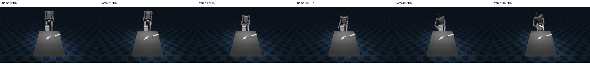
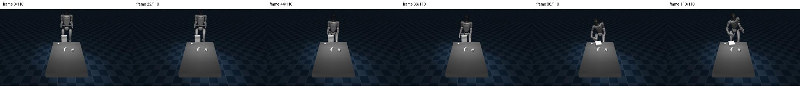
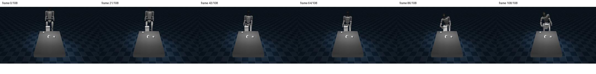
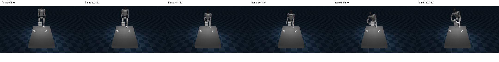
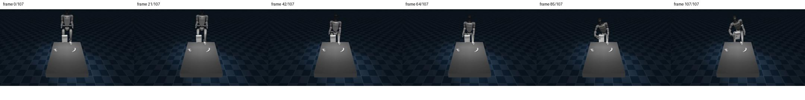
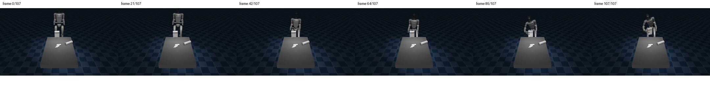
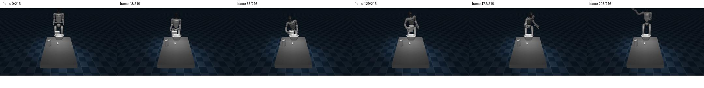
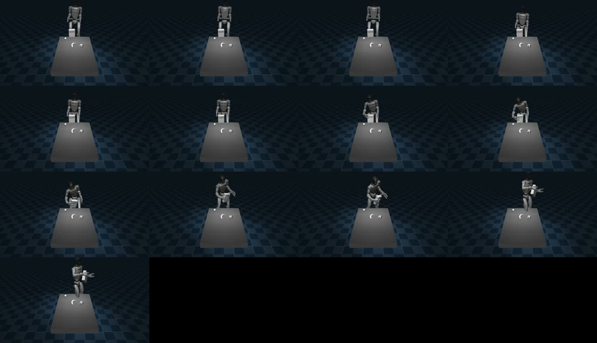

从任务选择到可纠正失败
本报告汇总截至 2026 年 7 月 13 日的任务设计、动态实验、判断证据和系统接口验证。每项结果同时写明它能够支持的判断，以及当前证据仍然覆盖不到的范围。
目前确定到哪里
现阶段已经形成四项可检查的结果。它们分别回答“考察什么任务”“失败能否只靠上肢修复”“实验数据能否统一记录”和“Controller 核心能否运行”。
最终任务尚未选定。当前保留 SIMPLE × BendPickMP、SIMPLE × stationary OpenFaucet 和 HumanoidBench × G1 Powerlift 三个继续验证的组合。
三个序列化 BendPick 状态中，固定右肩误差使结果全部失败；恢复原始上肢目标后全部成功：0/3 → 3/3，平均多举升 8.71 cm。
同一 trajectory schema 已读取 SIMPLE 与 HumanoidArena 的成功和失败轨迹，并统一保存 Policy、Controller、机器人状态、接触和终止结果。
MCC G1 核心在 zero-wrench smoke 中完成两次各 100 iteration 的运行；任务级接入、力估计准确性和安全性仍未验证。
三个候选任务
比较单位同时包含平台、具体任务、数据与 Policy、Controller 插入位置和评测协议。当前排序只表达工程证据的完整程度，不能代替动态验证。
SIMPLE × BendPickMP
继续考察- 保留依据
- 自动 motion planning、LeRobot 数据、训练与评测链最完整；已有举升运行和上肢纠正配对实验。
- 当前反证
- 一次完整 exactification trace 的 root 位移为 34.2 cm，两脚最大位移为 19.1 cm 与 50.9 cm，超过暂定 stationary 范围。
- 仍需证明
- 下肢参与的不可替代性、稳定抓持 evaluator、force/contact 的增量作用，以及真实 learned-policy failure 的上肢可纠正性。
- 退出条件
- 冻结下肢后任务表现不变，或正式 evaluator 无法排除碰撞抬升、瞬时抬升等投机结果。
SIMPLE × stationary OpenFaucet
继续考察- 保留依据
- articulated contact 能直接检验持续接触、滑移、力和 compliance；官方 task、数据入口与 evaluator 路径存在。
- 当前缺口
- 原任务含前移指令，尚无有效 stationary rollout；官方分解也没有给出可信的 faucet 转动过程。
- 仍需证明
- 近身改造后能够完成、下肢姿态确有贡献、手部接触决定成功，并可在同一配置下重新生成数据。
- 退出条件
- 足位受限后仍需持续 stepping，或任务退化为不需要全身姿态参与的桌面上肢操作。
HumanoidBench × G1 Powerlift
继续考察- 保留依据
- 地面负载、蹲伏和全身平衡符合 stationary whole-body interaction；任务不包含远距离导航目标。
- 当前缺口
- 尚未运行 G1 Powerlift；现有 reward 没有严格要求双手抓持，也缺少可靠二值 evaluator 与 DP 数据路线。
- 仍需证明
- 双手接触决定结果、成功 teacher trajectory 可获得、task-space Controller 能与原全身 torque 路线分层。
- 退出条件
- 无法建立可靠抓持成功判据，或 Controller 改造成本高于该任务带来的科研辨识力。
三组上肢纠正实验
实验从三个不同的 BendPick 序列化状态开始。每组都运行两个分支。两个分支在 step 119 之前完全相同；从 step 120 开始，失败分支只在右肩 pitch target 上增加 0.30 rad，纠正分支继续执行原始上肢目标。
两分支固定 reset state、原始 trajectory、下肢与 locomotion command、环境、evaluator 和 horizon。主动差异只出现在预注册的右肩动作字段。
| 状态 | 人为失败举升 | 纠正后举升 | 结果 | root 最大位移 | 足部最大位移 |
|---|---|---|---|---|---|
| State 1 | 1.81 cm | 9.70 cm | 失败 → 成功 | 6.06 cm | 4.12 cm |
| State 2 | 0.51 cm | 10.10 cm | 失败 → 成功 | 6.06 cm | 5.94 cm |
| State 3 | 1.67 cm | 10.33 cm | 失败 → 成功 | 6.06 cm | 7.97 cm |
State 1
同一 reset · 两个分支State 2
同一 reset · 两个分支State 3
同一 reset · 两个分支查看六条 contact sheet





这组实验支持
- 固定右肩误差会在三个状态中阻止目标物举升。
- 只恢复原始上肢目标即可把三个结果改为成功。
- 六条轨迹均处于预注册的 root/foot stationary 范围内。
这组实验尚未覆盖
- 自然 learned-policy failure 的频率。
- MCC、force、tactile 或真人 intervention 的效果。
- 训练提升、正式 A5 放行或最终 benchmark 选择。
动态任务初测收窄了什么
BendPick：脚本能够完成举升
MotionPlannerAgent 能够生成完整举升过程。这证明任务与脚本执行链可运行，为后续 evaluator、stationary 和上肢纠正实验提供了可复用状态。它没有训练 Diffusion Policy，也没有证明候选满足全部门槛。

BendPickAndPlace：当前 placement 路线未通过
完整执行分支能够进入操作过程，但放置阶段出现漂移或失稳，最后没有完成 placement。这个结果降低了它作为近期主任务的优先级。

BendPick exactification：stationary 约束暴露失败
一条完整 pre-A5 trace 达到了举升过程，但 root 与足部位移越过暂定范围：root 34.2 cm，左脚 19.1 cm，右脚 50.9 cm。该证据要求继续改任务与 evaluator，当前不能把 BendPick 直接写成 stationary benchmark。

记录接口与 Controller 到了哪一层
跨平台 trajectory interface
同一 schema 已处理 SIMPLE 与 HumanoidArena 的成功、失败和 timeout 轨迹。公共记录包含原始 observation、Policy action、Controller input/output、robot/root/foot state、contact、success 与 termination。
| 平台 | 验证样本 | 统一分析 | 当前边界 |
|---|---|---|---|
| SIMPLE | 成功 + 失败 | 通过 | 只证明 recorder / adapter / analyzer |
| HumanoidArena | 成功 + timeout | 通过 | 不证明平台或任务适配 |
这一结果消除了“每换一个候选就重写整套分析器”的工程障碍。它没有评价任务、Policy 或 Controller 的质量。
MCC zero-wrench component smoke
固定版本的 MCC G1 core 可在无界面环境实例化。双掌 2 × 54 command path 返回有限的 wrench 与 motor target；29 个 actuator 中识别出 14 个受控上肢 actuator。
已经验证
- 核心可实例化，输出 shape 与有限值检查通过。
- 双掌 command 与上肢 actuator mapping 可读取。
- 单机组件计算时间低于暂定 20 ms。
仍需验证
- SONIC/TWIST2 或任务控制栈接入。
- 已知位移下的预测力与 ground-truth wrench 一致性。
- 任务成功率、峰值力、滑移和真机安全。
尚未完成的工作
- 最终 task / benchmark 尚未选定。
- stationary OpenFaucet 尚无完整有效 trajectory；G1 Powerlift 尚未运行。
- 尚未生成自己的 sim dataset，也尚未训练自己的 Diffusion Policy。
- 官方仓库 checkpoint 与同学训练 checkpoint 尚未在同一协议下比较。
- Controller 的力学正确性 microbenchmark 尚未运行。
- MCC 尚未接入具体任务做 paired rollout。
- DexScrew 当前只提供 force/tactile-history 方法假设，尚无本项目实验。
下一步与依赖关系
可点击证据索引
下面的 JSON 是从原始工作区筛选出的最小机器证据。链接使用相对路径，报告移动或压缩后仍可打开。